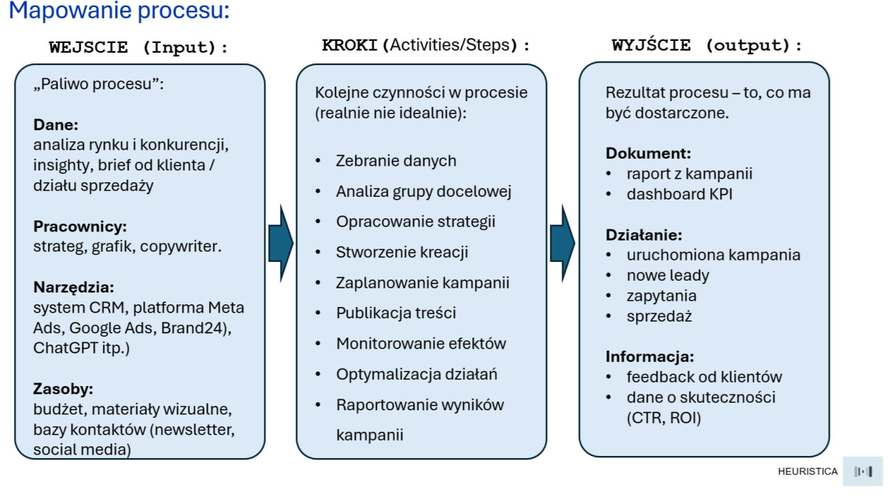
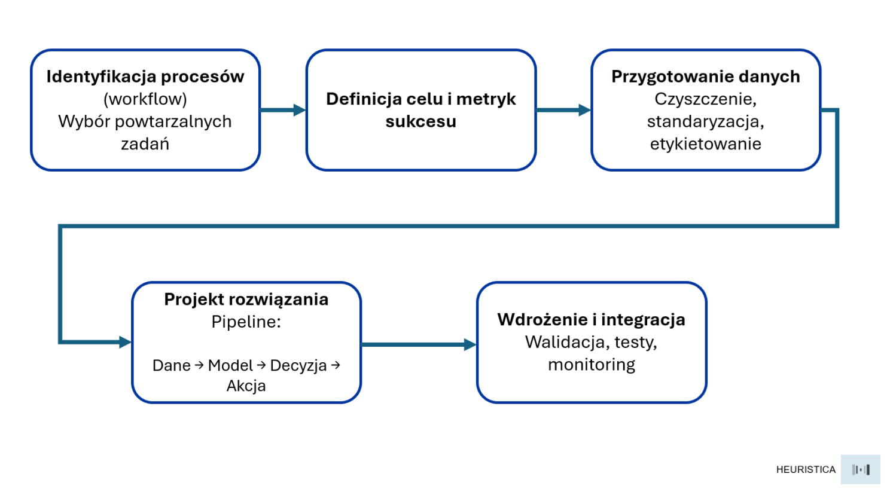
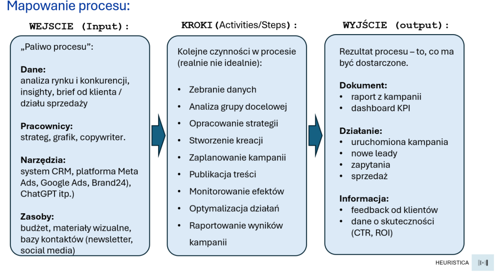

Zanim zaczniesz budować agenta AI, zmapuj proces...

Każdy dziś chce mieć własnego asystenta lub nawet agenta AI. Bo po co wykonywać wiele żmudnych zadań, skoro taki agent może za nas np. sam gromadzić jakieś dane, analizować je, podejmować adekwatne decyzje i tym samym „załatwiać temat”. Tego rodzaju automatyzacje przestały już być sferą science-fiction i powoli stają się już codziennością w firmach, które zaczynają wpinać AI w procesy marketingowe, sprzedażowe, operacyjne czy obsługowe.
Pojawia się tu jednak pewien haczyk – wiele prób takich wdrożeń kończy się fiaskiem nie za sprawą technologii, ale przez kwestię podstawową i pytanie, którego brakuje czasem na samym początku – pytanie wydawałoby się banalne: „Co tak naprawdę chcemy zautomatyzować?” Bo agent AI to przecież element procesu. Jeżeli zaś proces jest chaotyczny, nieopisany albo nie wiadomo, co ma być właściwie jego wynikiem, to agent tylko zwiększa chaos i szum informacyjny.
Skuteczne wdrażanie tego rodzaju automatyzacji warto więc zacząć od zmapowania przepływów pracy i określenia, co chcemy osiągnąć; wybór modeli LLM i narzędzi powinien nastąpić później.
Poniżej propozycja ogólnej metody, którą można potraktować jako prostą checklistę przed wdrożeniem asystenta / agenta AI.

Identyfikacja procesu: co tu się tak naprawdę dzieje?
Pierwszym krokiem w tym przypadku jest w zasadzie prosty: wybieramy konkretny workflow – przepływ pracy, a nie np. wybrany „obszar firmy”. Zamiast więc myślenia w kategoriach automatyzacji „sprzedaży”, może być to wąski i konkretny obszar w rodzaju „przygotowanie oferty cenowej dla klienta B2B”, zamiast „marketing”, może to być np. zadanie w rodzaju: „brief → pierwsza wersja kreacji”.
Proste i konkretne zadania będą na początek lepsze, ponieważ agentami AI najłatwiej zastępować prace, które są powtarzalne, mają jasne „wejścia” i jasno określone „wyjścia”. Dobrze też, jeśli są to czynności oparte na dających się opisać regułach. Najlepiej też jeśli procesy do automatyzacji jesteśmy w stanie opisać konkretną ścieżkę w zaledwie kilku krokach (np. 4-6 kroków).
Warto też zacząć nie od opisu sytuacji idealnej, ale od realiów – tego, jak proces faktycznie wygląda tu i teraz i odpowiedzieć sobie na pytania w rodzaju:
- Jakie dane i informacje będą potrzebne w tym konkretnym zadaniu? Jakie są ich źródła – skąd je bierzemy i jak często aktualizujemy?
- Kto i kiedy właściwie zaczyna sekwencję zdarzeń?
- Kto jest odpowiedzialny za zatwierdzanie kamieni milowych i podejmowane decyzje? Jakie kryteria bierze wtedy pod uwagę?
- Które decyzje są powtarzalne i podejmowane według jakiegoś schematu?
- Gdzie w procesie najczęściej pojawiają się opóźnienia albo błędy?
- Jak obecnie wygląda przepływ informacji pomiędzy zaangażowanymi w proces podmiotami?
- Co jest sygnałem, że zadanie zostało zakończone?
Odpowiedzi na takie pytania – np. gromadzone w formie burzy mózgów, pozwalają stworzyć pierwszy szkic mapy procesu – zidentyfikować ogólny jego kształt, a przy okazji kluczowe „punkty bólu” dotykające zaangażowanych.
Cel i metryki sukcesu, czyli po czym poznamy, że agent działa?
Kolejnym kluczowym krokiem przy wdrażaniu inicjatyw AI jest próba określenia sposobu oceny pracy agenta, czyli definicji: „Co to właściwie znaczy, że działa?”.
Cele najlepiej jest wówczas określać w języku biznesu, a nie technologii na zasadzie
„Czas przygotowania oferty skracamy z 1,5 dnia do 6 minut.”
„Redukujemy ręczne przepisywanie danych o 70%.”
„Zwiększamy wskaźnik konwersji ofert do klienta o 15% dzięki lepszej personalizacji.”
„Skracamy średni czas reakcji na zgłoszenie do 5 minut.” itp.
Jest to o tyle ważne, że agent AI ma przecież nie tylko „działać”, ale też przynosić konkretne, wymierne rezultaty – jeśli więc nie potrafimy wskazać wskaźników operacyjnych to być może nie jest to jeszcze czas, by w rozwiązanie takie inwestować czas i zasoby.
Dane: porządek przed automatyzacją
Trzeci krok — czyszczenie danych — może się wydawać nieco nudny, dlatego bywa pomijany. Agent podejmuje decyzje na podstawie danych. Jeśli dane wejściowe są „brudne” i niespójne, agent może konsekwentnie działać nieprawidłowo. Dlatego przed wdrożeniem warto zrobić trzy rzeczy:
- Czyszczenie danych (np. usunięcie zbędnych śmieci w postaci duplikatów).
- Standaryzacja (np. wszędzie te same nazwy pól czy kolumn, te same formaty).
- Etykietowanie / tagowanie (żeby agent po prostu wiedział, co jest czym).
Dobrej jakości dane pozwolą wykonywać proces w sposób powtarzalny i kontrolowalny. Bez tego etapu zbudowany agent AI może się okazać po prostu „interfejsem do bałaganu”.
Wstępny projekt rozwiązania: pipeline „dane → model → decyzja → akcja”
Kolejnym etapem będzie już projektowanie kształtu samego rozwiązania. W tym momencie możemy więc sformułować zależności pomiędzy kluczowymi elementami w procesie i układ samych narzędzi:
Dane - co agent widzi i przetwarza? Do jakich źródeł będzie sięgał? Z jaką częstotliwością?
Model / LLM - co będzie tu „silnikiem myślenia i planowania”? Czy w ogóle potrzebny jest LLM, czy może wystarczą klasyczne reguły biznesowe (np. warunkowanie, scoring, progi akceptacji itp.).
Decyzje - co uznajemy za rekomendację / wynik? (np. „udzielić rabatu 7,5%”)
Akcja — co się stanie automatycznie po podjęciu takiej decyzji? Np.: „wysłanie oferty”, „utworzenie zadania w CRM”, „aktualizacja rekordu” itp.
Na tym etapie warto też ustalić rolę człowieka w całej pętli. A rola ta może przyjmować różną postać ponieważ agent może działać w różnych trybach:
- tryb „human-in-the-loop”: agent proponuje tu jedynie działania ale to człowiek je zatwierdza,
- tryb półautonomiczny: agent działa samodzielnie np. w przypadku 80% zadań, a człowiek akceptuje jakieś wyjątki lub akcje specjalne,
- tryb autonomiczny: agent działa end-to-end bez udziału człowieka.
Wdrożenie i integracja: testy, monitoring, utrzymanie
To jest etap krytyczny, który decyduje, czy agent zagości w firmie na stałe, czy może zakończy swój żywot jako kolejny slajd w prezentacji. Ważną kwestią jest tu zatem integracja. Agent nie funkcjonuje przecież „obok firmy”. Powinien być mocno osadzony w realnym środowisku – np. CRM czy helpdesku.
Wdrożenie zaś samego narzędzia w postaci agenta powinno iść w parze z jego walidacją. Warto więc testować decyzje agenta na danych historycznych i próbkach działań. Sprawdźmy, czy agent zachowuje się konsekwentnie, czy ma uprzedzenia (bias) i czy nie halucynuje np. rabatów, których nie powinien przyznawać. Nie powinien to być test wyłącznie jednorazowy. Badania nad agentami podkreślają, że ich zachowanie zmienia się w czasie (agenci uczą się i adaptują), więc ewaluacja powinna być procesem ciągłym. Monitoring powinien obejmować skuteczność agenta, błędy, czas reakcji i koszty.
Mapowanie samego procesu: zanim ruszy automatyzacja
Wszystko, co powyżej dotyczy logiki wdrożenia i ogólnych zasad myślenia o automatyzacji. W tym miejscu warto jednak wrócić do kwestii głównej – tworzenia samej mapy procesu, która pozwala zrozumieć, jak naprawdę przepływają informacje, decyzje i dane.
W praktyce mapowanie takie jest próbą odpowiedzi na trzy podstawowe pytania:
- Co wchodzi?
- Co się dzieje po drodze?
- Co wychodzi?
Poniższy schemat ilustruje prosty sposób na to, jak przepływ taki opisać i uporządkować (zarządzanie kampanią reklamową).

Przykład mapy procesu dla kampanii reklamowej
1. WEJŚCIE (Input) - tu znajduje się „paliwo procesu”, czyli:
- Dane (np. brief, insighty, analizy rynkowe),
- Ludzie (kto jest faktycznie zaangażowany),
- Narzędzia i zasoby (CRM, Ads Manager, ChatGPT, bazy kontaktów).
Bez jasnego obrazu wejść nie da się zbudować agenta, bo nie wiadomo, z czego ma korzystać i na jakich danych ma działać.
2. KROKI (Activities/Steps) – realny przebieg pracy
Tak jak już wspomniałem, warto spisać tu nie proces idealny, zgodny z procedurami, lecz ten, który faktycznie odbywa się na co dzień. Etapy mogą tu wyglądać na zasadzie:
zbieranie danych → analiza → opracowanie strategii → kreacja → publikacja → monitoring → raportowanie.Dzięki temu widzimy, które czynności są:
- powtarzalne (czyli potencjalnie nadają się do automatyzacji),
- krytyczne (wymagają kontroli człowieka),
- zależne od innych (czyli wymagają integracji systemów).
Jest to też moment, w którym widać „punkty bólu” i potencjalne zyski z wdrożenia agenta.
3. WYJŚCIE (Output) - efekt, który ma być dostarczony
Na końcu zawsze jest rezultat procesu: np. dokument (raport, dashboard), działanie (uruchomiona kampania, przetworzone leady) lub informacja (np. feedback, dane o skuteczności). To właśnie te wyjścia stanowią punkt odniesienia dla celów i omawianych wcześniej metryk – właśnie po nich poznamy, czy agent działa dobrze.
Podsumowując…
Projektowanie i wdrażanie agentów AI to również – a może nawet głównie – praca koncepcyjna. Każdy agent jest w gruncie rzeczy odwzorowaniem procesu — sposobu, w jaki organizacja zbiera dane, podejmuje decyzje i komunikuje się.
Jeśli więc proces jest chaotyczny, agent tylko go przyspieszy. A jeśli jest dobrze zaprojektowany, to stanie się jego naturalnym rozszerzeniem. Dlatego punktem wyjścia nie jest pytanie: „który model, jaką platformę wybrać?”, tylko „który fragment codziennej pracy naprawdę warto opisać, uporządkować i zrozumieć?”. W tym sensie mapa procesu staje się nie tylko narzędziem analizy, ale też zwierciadłem organizacyjnej samorefleksji. Uczy myśleć o wykonywanych działaniach jako o spójnym systemie (decyzji, danych, współpracy), a nie zbiorze przypadkowych zadań.
Agent AI staje się wtedy nie tyle „cyfrowym pracownikiem”, lecz przedłużeniem logiki organizacji i jej filozofii pracy. Im lepiej zrozumiemy więc własny kontekst, tym mądrzej będzie działać. Sukces wdrożeń AI nie zależy więc od tego, na ile „inteligentna” jest technologia, lecz od tego, na ile inteligentnie zaprojektowane są aktualne procesy, w które wpinać będziemy taką technologię.